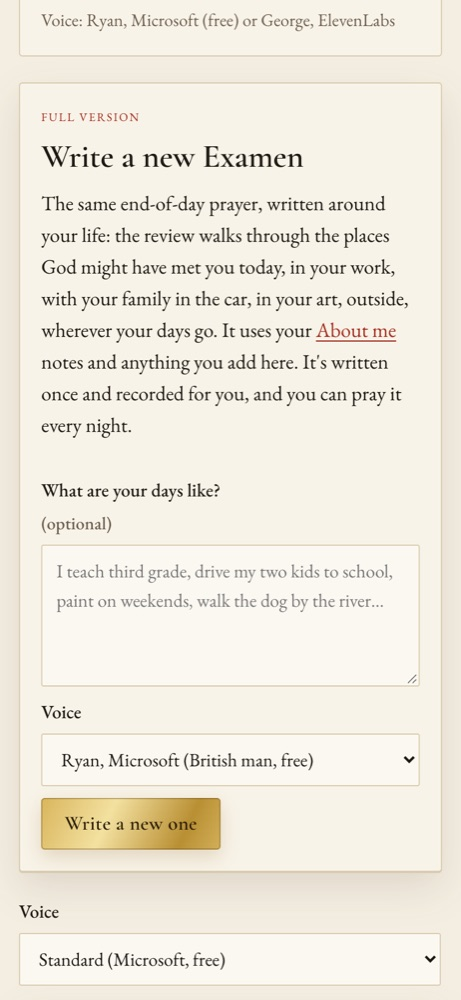

An end-of-day Examen written around your life, recorded once, prayed every night.

POST /api/practice/examen (what your days are like, and a voice) answers “making” at once. Full accounts only.app/my_examen.py asks the model for the session in a JSON schema: segments to speak, silences, and journal pauses, each with its step of the Examen and why it is there.GET /api/practice/examen returns it with signed links; it plays in the practice player, and what you write in the pauses goes to POST /api/practice/journal.{user}/examen/examen.json, {user}/examen/{time}/NN.mp3{user}/practice_journal.json: what you wrote{user}/user info.md: About me shapes the review of the dayanthropic/claude-opus-5.5 (the server's LLM_MODEL) writes the script with structured output.
A warm British storyteller, eleven_multilingual_v2.
en-GB-RyanNeural, a calm British voice, through edge-tts.
The Examen and the other guided practices are recorded once and served with the web app, so they cost nothing to play.